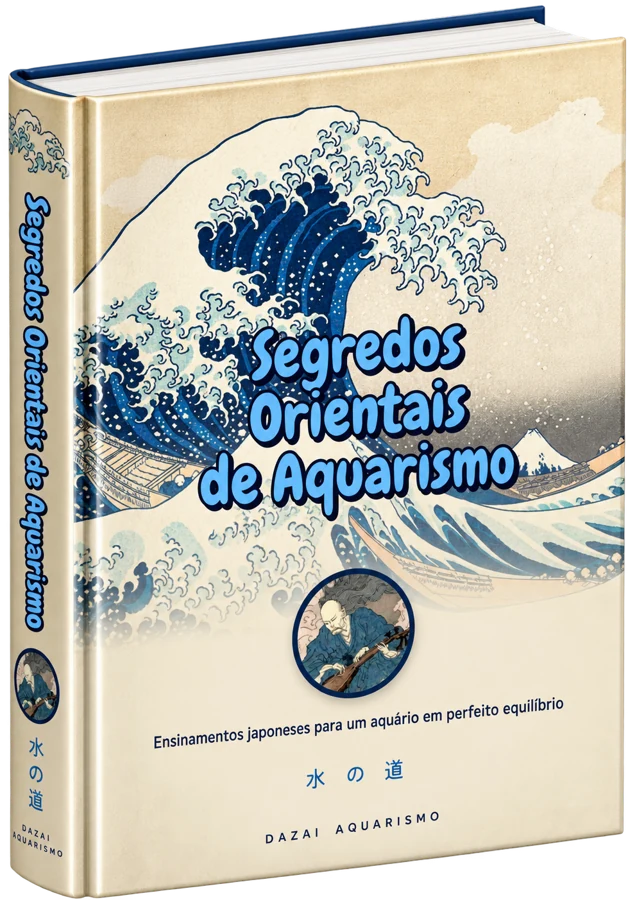
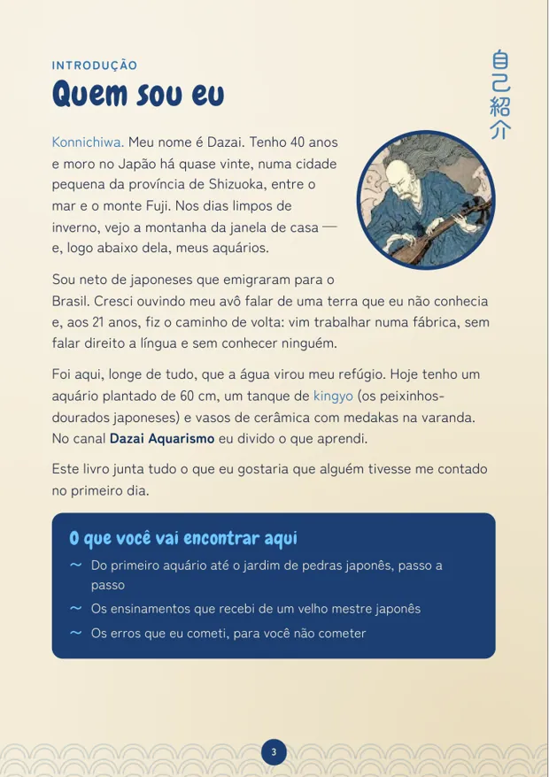
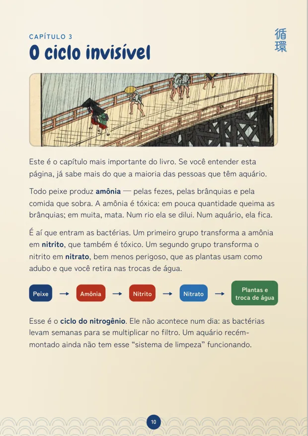
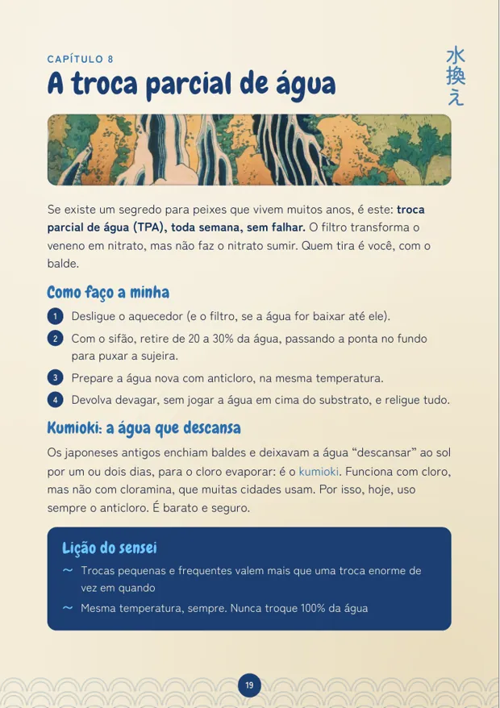
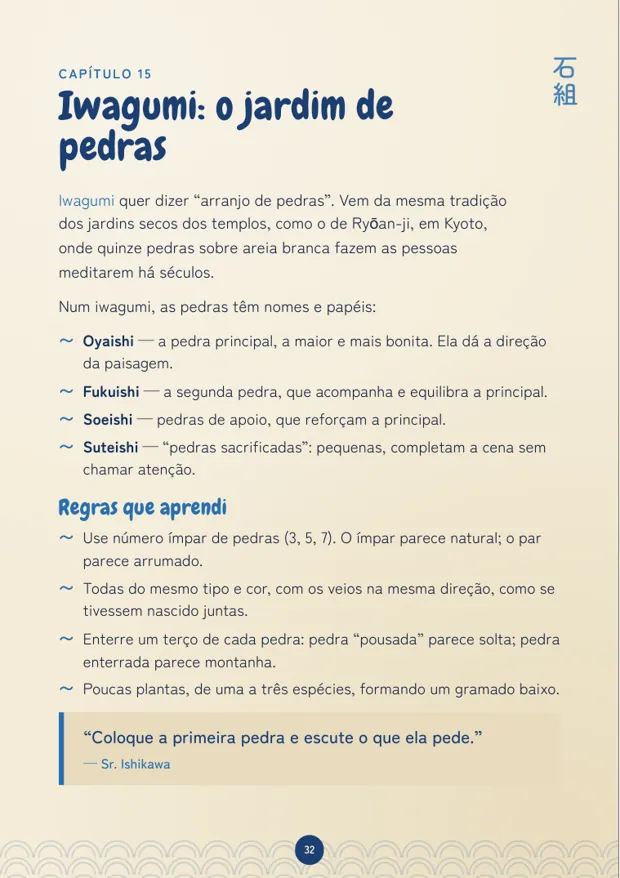
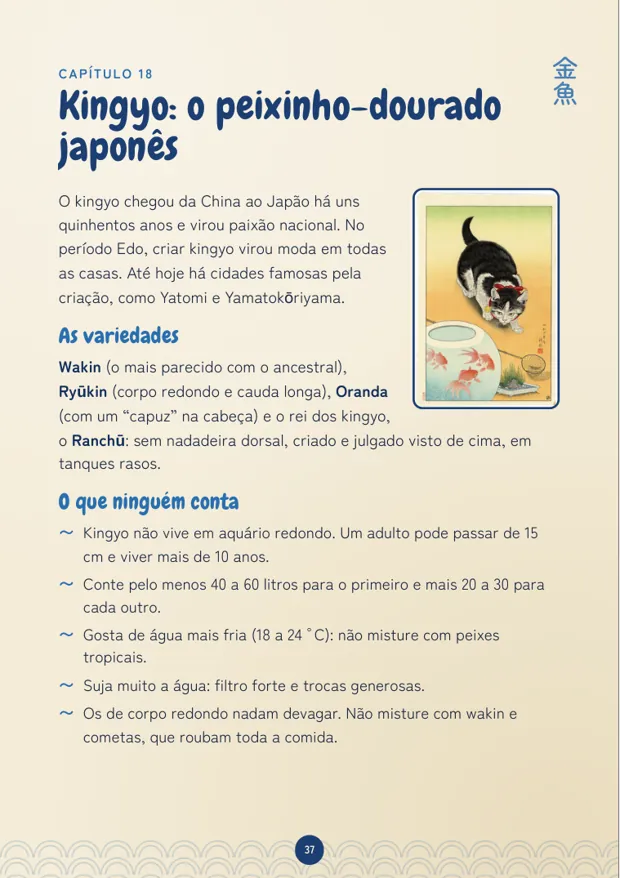
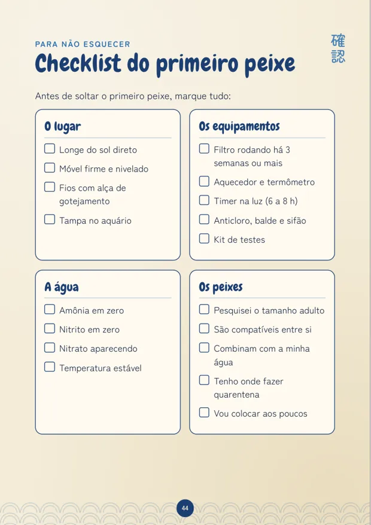

Parte I 初歩
Os Primeiros Passos
- O aquário certo e onde colocar
- Os equipamentos essenciais e o filtro
- O ciclo invisível da água
- Montagem passo a passo
- Os primeiros moradores
- A chegada: aclimatação
- Alimentação
Os ensinamentos japoneses que mantêm um aquário em perfeito equilíbrio, explicados com calma por um aquarista que vive no Japão há quase vinte anos. Do primeiro aquário ao jardim de pedras.
Quero o e-bookE-book em PDF · acesso imediato

Konnichiwa. Meu nome é Dazai. Tenho 40 anos e moro no Japão há quase vinte, numa cidade pequena de Shizuoka, entre o mar e o monte Fuji. Sou neto de japoneses que emigraram para o Brasil e, aos 21 anos, fiz o caminho de volta: vim trabalhar numa fábrica, sem falar direito a língua e sem conhecer ninguém.
Tudo começou num festival de verão. Peguei um peixinho-dourado com uma redinha de papel, levei pra casa num pote de vidro... e em uma semana ele morreu. Fui atrás de respostas numa lojinha perto da estação, e o dono, o senhor Ishikawa, já com mais de setenta anos, me disse a frase que mudou tudo:
“Você não cuida do peixe. Você cuida da água. O peixe cuida de si mesmo.”— Sr. Ishikawa
Voltei àquela loja quase todo sábado durante anos. Este livro junta o que ele me ensinou com vinte anos dos meus próprios acertos e tropeços.
Três partes, na ordem certa: primeiro o que todo iniciante precisa saber, depois a rotina que mantém os peixes saudáveis por anos e, por fim, os segredos dos aquaristas japoneses.
E ainda: os 12 erros que eu cometi, checklist do primeiro peixe, diário do aquário para preencher e glossário com os termos japoneses.






Logo depois da confirmação do pagamento, o acesso chega no seu e-mail pela Kiwify. É um PDF que você baixa na hora.
Serve. O livro começa do zero (escolher o aquário, o ciclo da água, os primeiros peixes) e só depois vai para o avançado.
A Parte III é para você: iwagumi, composição, CO₂ e adubo, camarões, kingyo, medaka, reprodução e o aquário wabi-sabi.
Pode. O PDF abre no celular, tablet, computador ou leitor de e-book, e também dá para imprimir.
49 páginas ilustradas com gravuras japonesas, divididas em 3 partes e 22 capítulos, mais checklist, diário do aquário e glossário.
Você tem 7 dias de garantia. Se não gostar, pede o reembolso pela própria Kiwify.
49 páginas ilustradas, 22 capítulos e os ensinamentos de um velho mestre japonês, do primeiro aquário ao jardim de pedras.